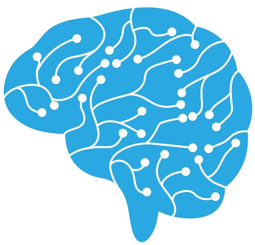

 The Ethics Bug is a vulnerability affecting every programmer in the software industry. This weakness allows malicious actors to create software that violates against public interest, which under normal conditions, would be prevented by the better judgement of the developer, allowing any company, executive, or project manager in a position of power over their developers to bypass normal moral and legal boundaries.
Software today is a fundamental part of our modern information-based economy. Although relatively new to human society, most interactions between people and their social and physical environments are enabled by software. Software today is a means for communication, production, transportation, navigation, advertisement, bookkeeping, and statistical analysis and prediction. With software having eaten the world, it is essential that the software industry recognizes the possible ethical implications that come with being such a keystone of our society. Most importantly, the software industry should recognize how the employer-employee relationship affects ethicality as well as ethical codes that have been laid out by standards bodies and how they relate to making ethical business decisions. Although the "Ethics Bug" isn't an actual software or hardware vulnerability like as in Heartbleed or Meltdown/Spectre, its implications on the software industry are just as if not more important.
This vulnerability has already been exploited several times. The most severe recent example has been the Dieselgate emissions scandal caused by Volkswagen in which the company successfully attempted to go around emissions standards for their diesel engines (Chappell). Volkswagen contracted German company Bosch to create engine controller software to detect when it was being tested for emissions compliance and reduce the engine's fuel intake by a considerable margin to decrease emissions to an acceptable level. Under normal circumstances, any employee in the chain of command responsible could have stopped the violation of emissions standards, the Ethics Bug prevented them from taking action.
Another more subtle example of an exploit is one user's story of a web project they worked on. This project was a questionnaire designed to market a prescription drug toward potential users, which unethically would persuade users to take the drug even if their symptoms didn't align with those the drug attempted to treat (Bort). The relatively inexperienced software engineer had little knowledge of drug advertisement laws in their country, which opened up the Ethics Bug as an avenue for exploitation. The drug would later be linked to increased depression and one suicide.
Society at large is at risk to the ethical negligence of the software industry. Practically every facet of today's global society is in some way influenced by the decisions of a few key companies like Google, Facebook, or Amazon. Although the software industry provides much more mobility for software engineers and programmers, typing a few questionable keystrokes over the course of a day or two has a much lower perceived risk than losing their employment.
There are still unanswered questions surrounding the extent of the Ethics Bug's influence. Regarding the employee-employer relationship, a much larger strain to conform to company policies of secrecy is placed on the employee. Non-disclosure agreements preventing employees from disclosing information to others make activism outside of litigation difficult (Sebastian). These restrictions on communication, even within companies, hurts the ability of employees to bring light to ethical transgressions, and might even prove harmful for business, according to Clifford J. Ehrlich, Senior Vice President of Human Resources for Marriott International.
Some potential solutions include more legal protections for workers in the software industry. Whistleblowing protections exist in much of the Western world, although current political climates do not favor the employee in raising ethical awareness. Current laws do not account for a much more global society and economy intertwined with software than even ten years ago. New legislation is a much more long-term fix for this vulnerability. Patches and hotfixes are starting to make an appearance, however.
A code of ethics has been published by the IEEE which promotes adherence to "public interest" for software engineers and managers (Gotterbarn). These ethical standards require that software engineers "accept full responsibility for their own work," however in some cases responsibility for ethical violations is unclear. An increase in awareness of this code could help to lessen the spread of exploits of the Ethics Bug.
A much more pressing issue is climate change. A lack of attention to the scientific consensus for several decades has led to the increase in global temperatures already by around 1.6 degrees Celsius from the mid 1800s. Programmers, and in particular software companies need to pay more attention to the environmental impact of their products to help postpone the complete collapse of human civilization.